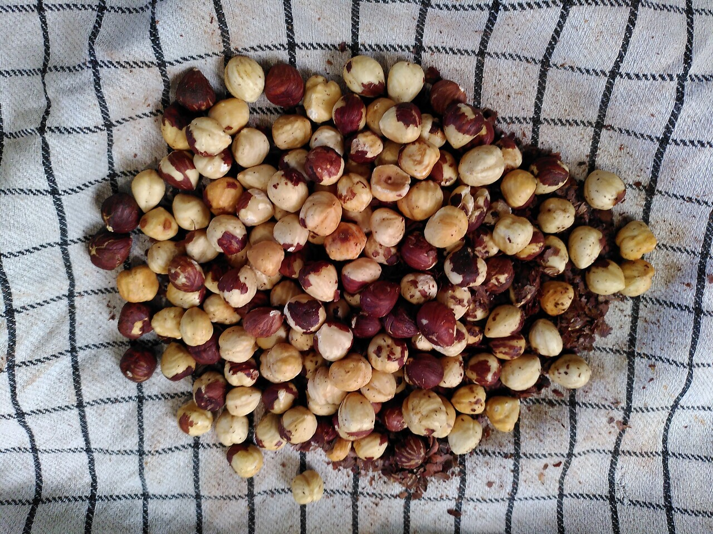
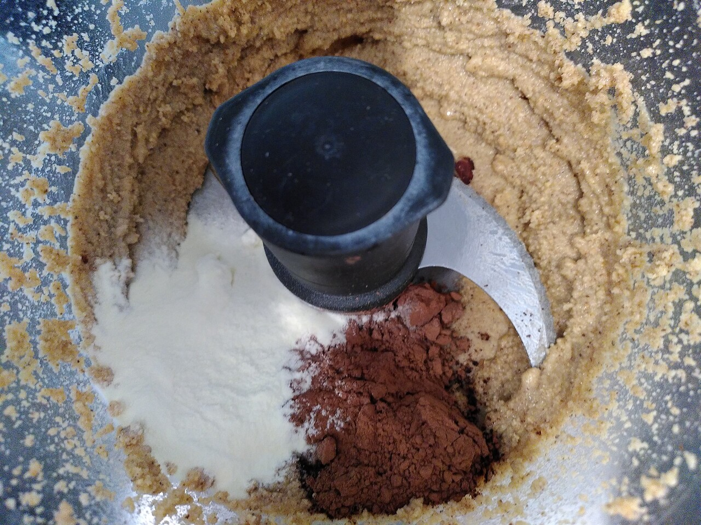
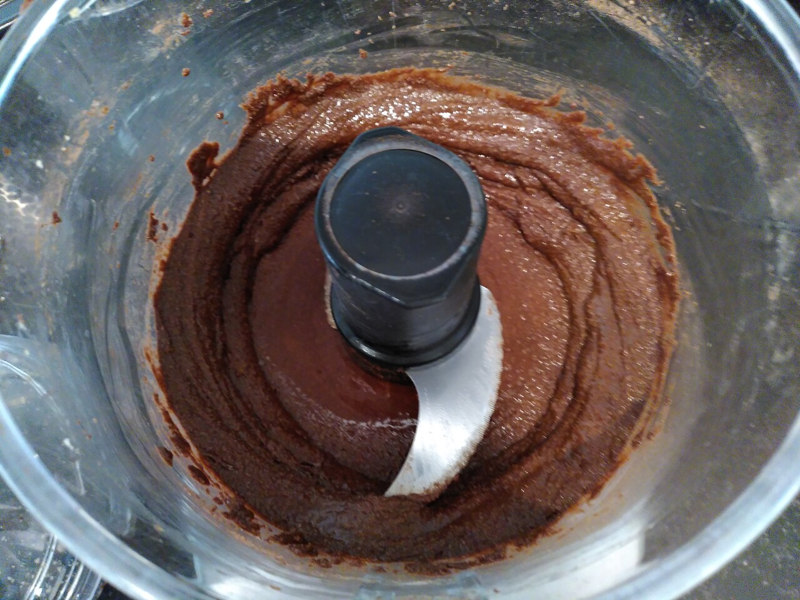

Hazelnoot-chocoladepasta
“Mama, kun je een keer chocoladepasta maken?” Als mijn dochter dat zegt, voel ik me trots. Trots omdat mijn dochter er vertrouwen in heeft dat ik lekkere chocolade pasta kan maken. Ze gaat er niet vanuit dat de lekkerste chocolade pasta uit de winkel komt, ze gaat er vanuit dat mama lekkere chocoladepasta kan maken. Met zo’n verzoek ga ik natuurlijk enthousiast aan de slag.
Van hazelnoot-chocoladepasta heb ik verschillende recepten geprobeerd, maar niet allemaal met evenveel succes. Met alleen cacao en hazelnoten vind ik hem iets te puur en gezond. Wel lekker, maar die wint het bij mij niet van de verslavende pot uit de supermarkt. Ik heb een keer geexperimenteerd met het toevoegen van gecondenseerde melk om hem iets zoeter en romiger te maken, maar die poging was volledig mislukt. Dit keer heb ik er wat melkpoeder en wat poedersuiker aan toegevoegd, en daar ben ik erg tevreden over.
Ingredienten
- hazelnoten (300 gram)
- cacao (1 el)
- melkpoeder (1 el)
- poedersuiker (50 gram)
- kokosolie (1 el)

Instructies
-
Rooster de hazelnoten 5 minuten in de oven op 200 graden. Door ze vervolgens in een doek te leggen en te vrijven kan je ze eenvoudig van het velletje ontdoen. Wat er niet makkelijk af gaat laat ik zitten.
-
Daarna gaan de hazelnoten in de keukenmachine. Eerst maak je van de hazelnoten een notenpasta. Daarna voeg je naar smaak cacao, melkpoeder en poedersuiker toe. Ook kun je er eventueel nog wat kokosolie of arachideolie aan toevoegen om de hazelnoot-chocolade pasta nog wat smeerbaarder te maken.
Dit is een recept waar ik geen weegschaal bij gebruik. Bij de ingredienten heb ik wel hoeveelheden gezet, maar dit is meer om een idee te geven wat er bij mij ongeveer in gaat. Je kan de notenpasta altijd proeven en er eventueel naar smaak wat meer cacao, melkpoeder of poedersuiker aan toevoegen.
Wat de melkpoeder doet met de houdbaarheid van deze notenpasta moeten we nog gaan ervaren. Maar ik verwacht dat we daar nooit achter gaan komen, omdat hij veel te snel op is.
|  |  |